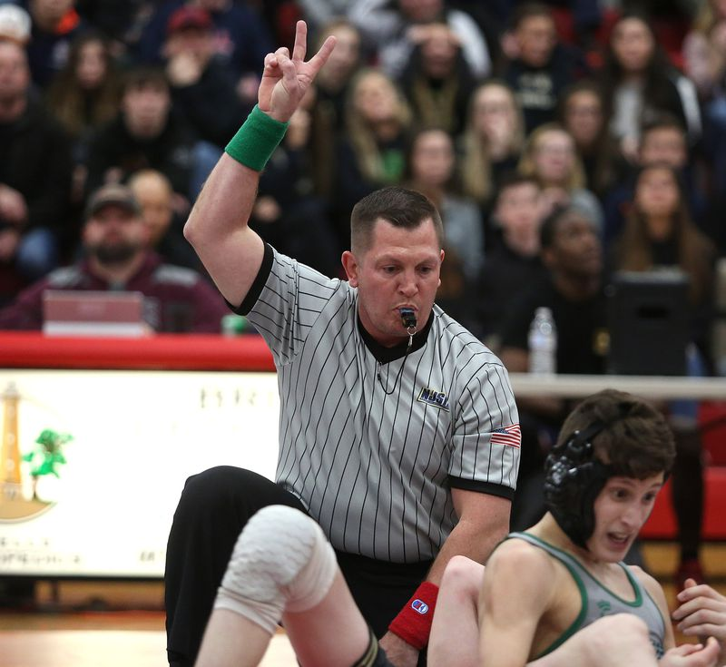

There are three different types of wrestling that are practiced today. There is Folkstyle, Freestyle, and Greco Roman. All three have similar components included in them.
Folkstyle: is practiced almost exclusively through high school and collegiate levels. To win a Folkstyle wrestling match a competitor has to get his opponent to their back or beating them by scoring 16 points more than the opponent.

Freestyle: is very similar to that of Folkstyle, you have to get your opponent to their back or beat them by gaining 10 more points more than your opponent. Freestyle is practiced more as a professional sport and a club sport. Freestyle is the more practiced of the three different types of wrestling and is one of the Olympic versions of wrestling.
Greco Roman: is the oldest version of wrestling. Greco Roman, like the other versions has a similar winning method. You must pin your opponent to the mat on their back for 5 seconds to win or gain 8 more points than your opponent. Greco Roman is scored almost exactly the same as Freestyle and fairly different than that of Folkstyle.